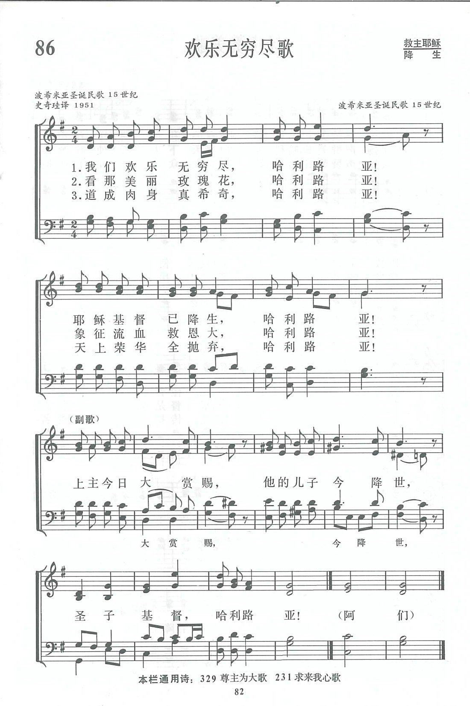
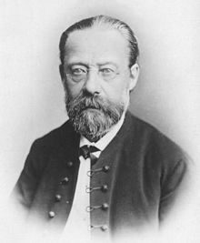

|
|
086首 《欢乐无穷尽歌》 |
|
1 Let our gladness have no end, alleluia! Refrain: 2 Prophesied in days of old, alleluia! 3 See, the loveliest blooming rose, alleluia! 4 Into flesh is made the Word, alleluia! |
|
|
https://www.zanmeishige.com/tab/13717.html?songbook=1&index=86

|
|
|
|
|


https://www.youtube.com/watch?v=n9iISigYYw8 - Sara Groves - Let Our Gladness Have No End
https://youtu.be/t4YNj7dv1mI -
Let Our Gladness Have No End (feat. Mark Sedio) · The National Lutheran
Choir
https://youtu.be/hzHOeBF2cGI
| Text: | Let Our Gladness Have No End |
| Translator (st. 2): | Vincent Pisek, 1859-1930 |
| Tune: | NARODIL SE KRISTUS PÁN |
| Arranger: | Richard W. Hillert, b. 1923 |
Tune Information
| Title: | NARODIL SE KRISTUS PÁN |
| Meter: | 7.4.7.4 with refrain |
| Incipit: | 12345 55456 55544 |
| Key: | F Major |
| Source: | Bohemian, 15th cent. |
| Copyright: | Public Domain |
第86首 欢乐无穷尽歌 Let our gladness have no end _Bohemia Carol
经文：“他们看见那星，就大大地欢喜”(太2：10)。
《欢乐无穷尽歌》的歌词和乐曲原是一首15世纪初波希米亚的圣诞颂歌(Carol)。正如第72首所介绍的那样，圣诞颂歌原是欧洲人伴随舞蹈的民间歌曲。在1918年捷克斯洛伐克独立之前，该地区统称为波希米亚(Bohemia)。他们的民族服装、民间音乐和舞蹈在世界上素负盛名。该民族中曾产生出好几位音乐家，诸如斯美塔那(B．Smetana，1824— 1884)和德伏夏克(A.Dvo?ák，1841—1904)等人。
波希米亚民族主要信仰基督教，所以他们的音乐中有很多基督教音乐和歌曲，这首《欢乐无穷尽歌》就是其中之一。它的曲调欢乐，节奏鲜明，副歌的和声又很活跃，充分表达出圣诞节来临的欢乐，在欧洲很受人们欢迎。早在1602年就被选入德国信义宗的赞美诗集中。
在传到英国时出现过有好几种不同的英文译词，除这首首句为“我们欢乐无穷尽”(1et our gladness have no end)外，还有的首句为：“基督我主今降生”(Christ the Lord to us is born),“天地与我同欢庆”(Be ye joyful，earth and sky)。
这首诗的调名为((NARODIL SE KRISTUS PON》又叫做《救主诞生(SALVAT0R NATUS)》。
https://www.xueshengshi.com/?p=5549
貝多伊齊·史麥塔納 Bedřich Smetana，1824－1884[編輯]
| 貝多伊齊·史麥塔納 | |
|---|---|
|
 |
|
| 原文名 | Bedřich Smetana |
| 出生 | 1824年3月2日 奧地利帝國利托米什爾 |
| 逝世 | 1884年5月12日（60歲） 奧匈帝國布拉格 |
| 國籍 |
奧地利帝國（－1867） 奧匈帝國（1867－1884） |
| 知名作品 | 歌劇《被出賣的新嫁娘》《吻》，交響詩套曲《我的祖國》（包括《莫爾道河》），第一弦樂四重奏「我的一生」 |
| 所屬時期/樂派 | 浪漫主義 |
| 擅長類型 | 歌劇，管弦樂，室內樂，鋼琴獨奏曲 |
| 簽名 | |
{kind=link}
{kind=link}
貝多伊齊·史麥塔納（捷克語：Bedřich Smetana，捷克語發音：[ˈbɛdr̝ɪx ˈsmɛtana]（ 聆聽）；1824年3月2日－1884年5月12日），捷克作曲家。他的音樂成功發揚了捷克民族文化，和捷克的獨立密不可分，因此被譽為捷克音樂之父。在國際間他以歌劇《被出賣的新嫁娘》最具代表性；包括交響詩組曲《我的祖國》細膩地演繹了捷克的歷史、傳說故事和景緻，以及第一號弦樂四重奏《我的一生》。
生涯[編輯]
{kind=link}
史麥塔納是一啤酒釀製人之子，以腓特烈·史麥塔納受洗。成年後他有意用捷克名Bedřich再受洗。
史麥塔納早年即受到鋼琴教育。從1843到1847年他在布拉格當音樂老師，但並沒放棄學業，他受到布拉格音樂學院揚·貝德里奇·基特爾的鼓勵和幫助，在約瑟夫·普羅克施門下學習。普羅克施、基特爾、史麥塔納和音樂史家奧古斯特·威廉·安布羅斯組成一個音樂愛國小組，他們以新浪漫音樂–如華格納–為其創作理念的起點。一如華格納，史麥塔納還在1848年參加了1848年革命，同時他在布拉格開辦了自己的音樂學校。
1856年他因為政治原因離開了自己的祖國，到瑞典哥德堡成為當地愛樂協會（瑞典語：Harmoniska Sällskapet）的指揮。當奧地利的專制制度有所放緩之後，他於1861年返回布拉格，並且不知疲倦的投入到捷克音樂的發展中去。1861年，愛國歌唱協會 Hlahol 成立，1862年布拉格捷克臨時劇院（捷克語：České Prozatímní Divadlo）開幕，1863年還成立了藝術家協會「藝術討論」（捷克語：Umělecká Beseda）。
{kind=link}
史麥塔納從1863年至1865年間是歌唱協會Hlahol的指導，1864到1869年捷克愛樂音樂會的指揮，1864年到1865年是報紙 Národní listy 的音樂評論員，1863到1870年是「藝術討論」音樂部的主席，1866年到1874年繼卡爾·康扎克後擔任捷克臨時劇院的樂隊長（捷克語：Kapelník）。1874年史麥塔納病重，並且失聰，這使得他淡出了公眾。但失聰並沒有讓作為作曲家的史麥塔納停下來，他患有嚴重的耳鳴。臨終前不久，精疲力盡的史麥塔納甚至被送到去精神疾病診所，1884年5月12日他在診所逝世。他的遺體被安葬在布拉格的威雪德墓園。
作品